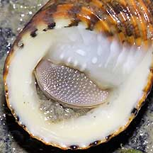
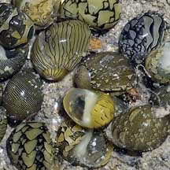
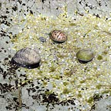

|
|
| shelled snails text index | photo index |
| Phylum Mollusca > Class Gastropoda |
| Nerite
snails Family Neritidae updated Sep 2020
Where seen? These snails with thick, rounded shells are common in our mangroves and rocky shores. Some colourful nerites are hard to spot as they blend well with the equally colourful rocks they are found on. They are usually immobile at low tide during the day. At night and on a cool wet day, you might see them creeping about. Tan and Clements based on surveys of 31 sites over a period of 10 years reveals 19 species with 6 new records for Singapore! Features: 2-4cm. Our nerites typically have a distinctive hemispherical shell, somewhat like half a marble. The shell is quite thick and heavy. The streamlined shape probably helps the snail stick onto a slippery rock that is pounded by waves. It also makes it difficult for a crab (and a human) to grip the shell. A sturdy chalky operculum provides a secure seal to the shell opening. The operculum has an internal peg to lock it firmly. This makes it difficult for a crab to stick a pincer in and dig out the snail. It also protects against water loss during low tide. Nerites usually stay above the high tide line. This is probably to avoid being eaten by fish. Some common nerites of the same species can have a wide range of shell colours and patterns. They are best distinguished by the structure of the shell and underside of the shell. A preliminary identification of the various species of nerites can be made by looking at the teeth-like structures at the shell opening (these do not actually function as teeth to chew food), and the general shape and texture of the shell and operculum. But very similar-looking nerites can only be positively distinguished by looking at internal features of the shell and animal. Here's a comparison of some similar nerite snails and how to roughly tell them apart. |
 Tough shell with thick operculum. Chek Jawa, Jan 05 |
 The same species of Nerites may come The same species of Nerites may comein a wide variety of colours and patterns. Labrador, Jan 09 |
 The tiniest nerites on our shores are aptly named Dubious nerites. |
| What do they eat? Nerites graze
the algae that thrive on the rocks, scraping this off with their radula.
They also eat lichen growing there. They are often found near their
food source; areas where sunlight and water exchange are greatest. Bouncing escape! When alarmed, nerites can immediately unclamp and retract into their hard round shells. Whereupon, they bounce down the rocks like marbles. This is probably how these slow snails can rapidly escape from crabs and other predators. |
 |
| Nerite babies: Nerites have separate genders and engage in internal fertilisation. They have a complex reproductive system to achieve this, and to produce nutrition-packed eggs in protective capsules. The white circular egg capsules are sometimes seen in rock pools, under rocks and in moist crevices. Each egg capsule may have more than 30 eggs. These hatch into free-swimming larvae that only later settle down to develop into snails. |
|
 Nerites with their white egg capsules. Lazarus Island, Jun 09 |
 Tiny egg capsules laid by the tiniest nerite. East Coast, Dec 08 |
 Nerites mating with their white egg capsules. Chek Jawa, Feb 02 |
| Human uses: They are gathered
as food by coastal dwellers. Some species of nerites are eaten raw
or toasted. The shell is also used in shell craft. Status and threats: The tiny and beautifully marked Dubious nerite snails (Clithon oulaniensis) and Polished nerite (Nerita polita) are listed as 'Vulnerable' on the Red List of threatened animals of Singapore. |
| Some Nerites on Singapore shores |


| Family
Neritidae recorded for Singapore from Tan Siong Kiat and Henrietta P. M. Woo, 2010 Preliminary Checklist of The Molluscs of Singapore. from Tan, S.K. & Clements, R. (2008) Taxonomy and distribution of the Neritidae (Mollusca: Gastropoda) on Singapore. in red are those listed among the threatened animals of Singapore Davison, G.W. H. and P. K. L. Ng and Ho Hua Chew, 2008. The Singapore Red Data Book: Threatened plants and animals of Singapore. ^from WORMS. +Other additions (Singapore Biodiversity Record, etc)
|
Links
References
|